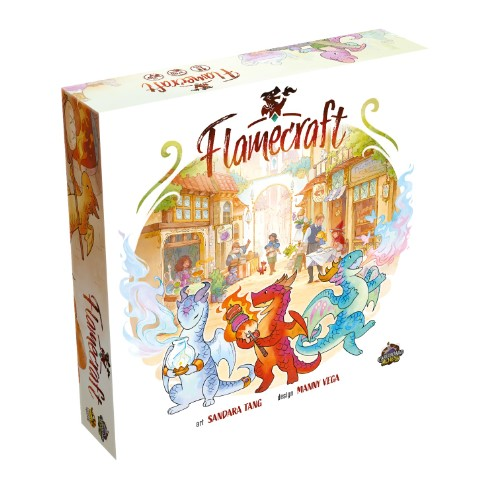

Review: Flamecraft
"Flamecraft" is a delightful board game that immerses players in a whimsical world where artisan dragons help manage bustling shops. Designed by Manny Vega and published by Cardboard Alchemy, this game has quickly captured the hearts of board game enthusiasts with its charming theme, pun-filled names, and accessible gameplay.
Theme and Components
The first thing you'll notice about "Flamecraft" is its enchanting artwork. The illustrations by Sandara Tang are vibrant and whimsical, bringing the magical town to life. The game features various artisan dragons, each beautifully illustrated and named with delightful puns like "Smokey Bacon," a dragon who helps in a butcher shop, and "Chai Spice," a dragon who specializes in the tea shop. The shops themselves are equally charming, with names like "Potion Pantry" and "Bread & Buns." The components are of high quality, including sturdy cardboard shop tiles, colorful resource tokens, and a beautifully designed game board that represents the town. The dragon and shop cards are well-made and feel great in hand, adding to the overall immersive experience.
Gameplay
In "Flamecraft," players take on the role of Flamekeepers, magical artisans who manage shops and use dragons to create goods and enhance businesses. The game is played over a series of turns, where players can perform actions such as visiting a shop, gathering resources, or enchanting a shop. The objective is to earn the most reputation points by the end of the game. Points can be earned by gathering resources, fulfilling enchantments, and strategically placing dragons in shops to maximize their abilities. Each dragon has unique powers that can be activated, allowing players to gain additional resources or perform special actions.
Ease of Learning
One of the standout features of "Flamecraft" is its accessibility. The game is easy to learn, making it a great choice for both casual gamers and more experienced players. The rulebook is well-written and includes plenty of illustrations and examples to help new players understand the mechanics quickly. Additionally, the game offers a balanced mix of strategy and luck, ensuring that every game feels fresh and exciting. The turns are relatively quick, keeping all players engaged throughout the game. The combination of resource management, strategic placement, and charming theme makes "Flamecraft" an enjoyable experience for players of all ages.
Replayability and Strategy
"Flamecraft" offers a high level of replayability due to its variable setup and diverse dragon abilities. Each game feels different as players adapt their strategies based on the available shops and dragons. The pun-based names and whimsical theme add to the enjoyment, making each playthrough a delightful experience. The strategic depth of "Flamecraft" lies in the careful management of resources and the optimal placement of dragons to maximize their abilities. Players must think ahead and plan their actions to outscore their opponents, making for a satisfying and engaging game.
Conclusion
"Flamecraft" is a charming and accessible board game that combines beautiful artwork, delightful pun-based names, and engaging gameplay. Its ease of learning makes it an excellent choice for families and casual gamers, while the strategic depth ensures that more experienced players will find it equally enjoyable. Whether you're a fan of fantasy themes or just looking for a fun and enchanting game to add to your collection, "Flamecraft" is sure to delight and entertain.